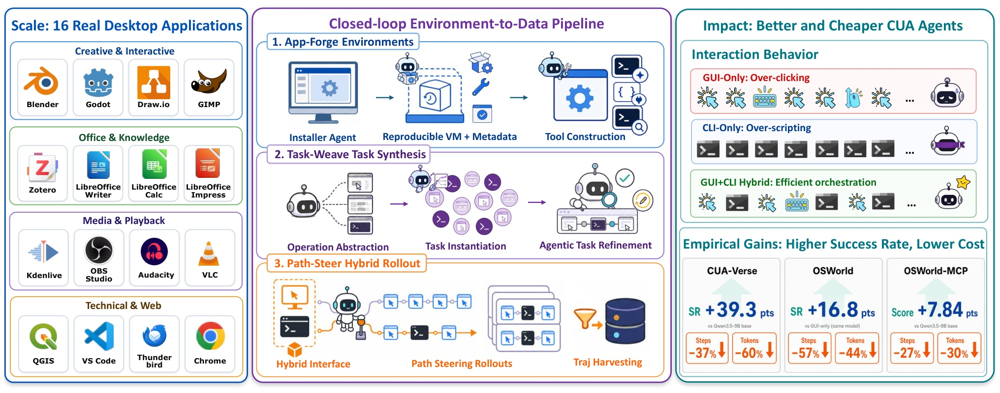
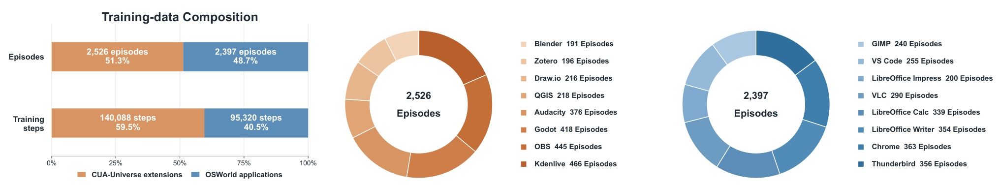
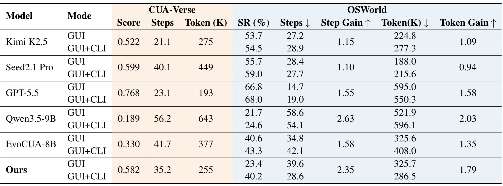
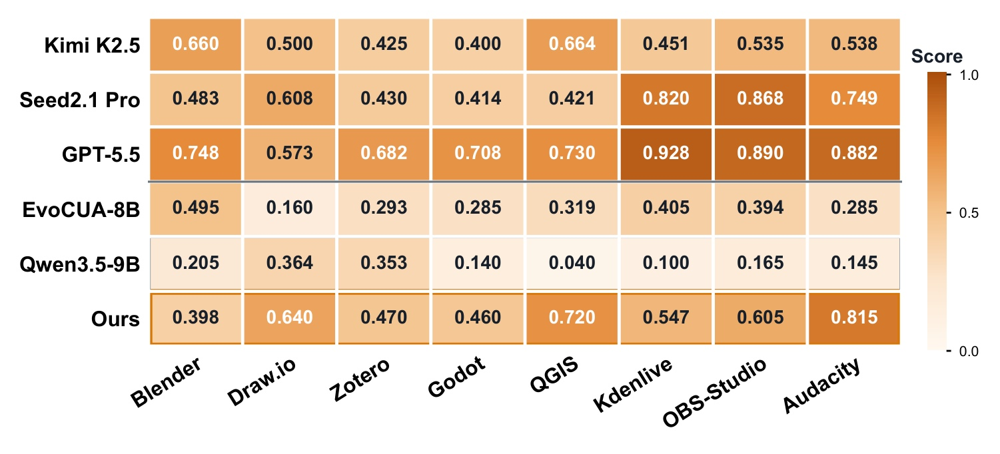
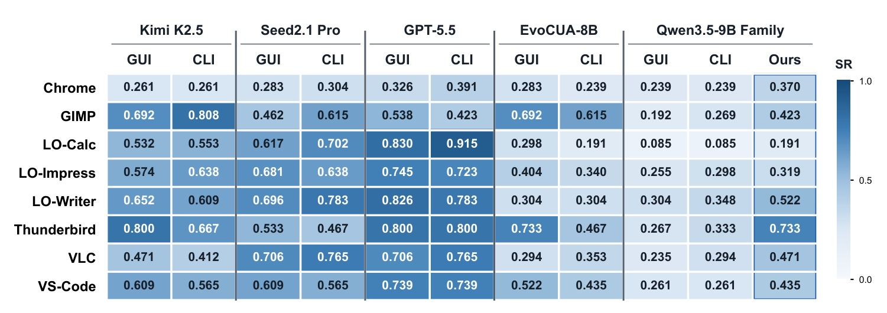
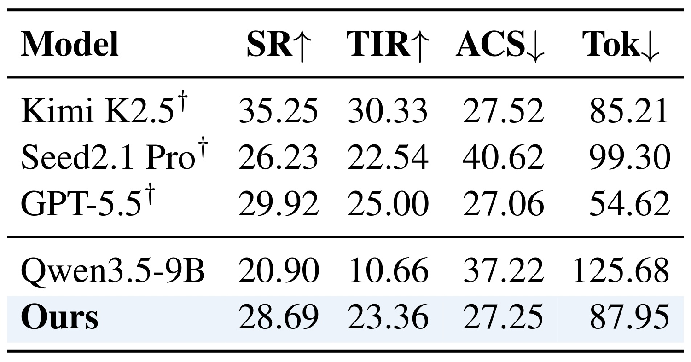
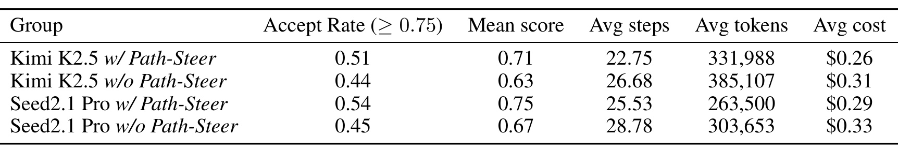
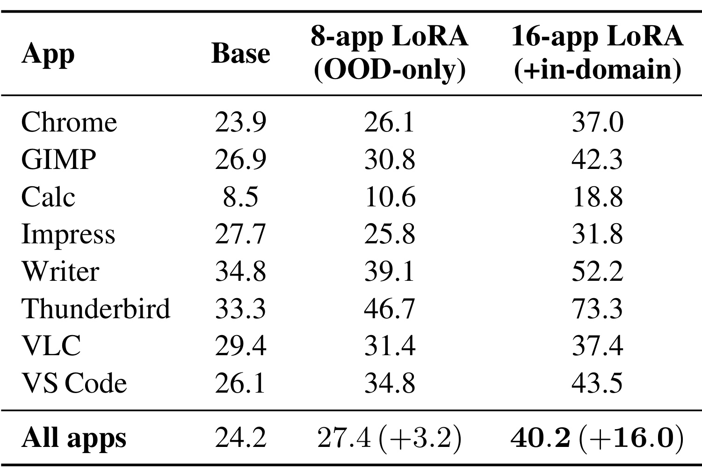
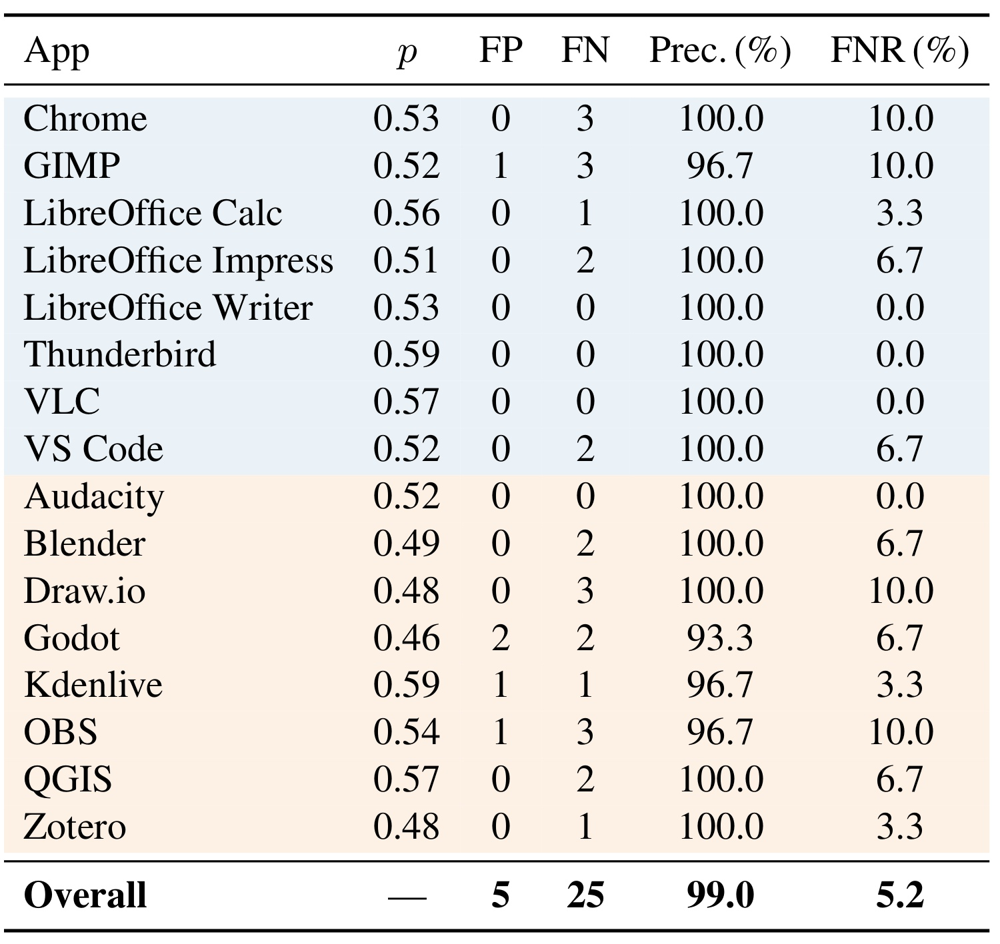

CUA-Universe：让真实桌面软件持续生成 GUI 与 CLI 协同训练数据
CUA-Universe: A Scalable and Dynamic Environment for Hybrid GUI+CLI Agents 由上海交通大学与浙江大学合作完成，Haoting Shi、Wenhao Wang 为共同一作，2026 年 9 月 4 日首次提交。本文精读对应 arXiv 论文入口。作者提出环境构建、任务合成和轨迹筛选流水线，并以 Qwen3.5-9B 的监督微调验证价值。作者表示将公开代码与数据；截至本次核验，尚未确认本文独立代码库或项目页，以下实验均为原文报告，未独立复现。
现有计算机操作 Agent 大多依赖图形界面，轨迹冗长；真实工作却需要视觉检查与精确、高吞吐的命令操作协同。既有环境难以低成本为多种真实软件同时提供 GUI 和 CLI，单模态 Agent 也难以判断何时切换接口并保持应用状态一致。
1. 背景和问题
计算机操作任务的困难并不只是“找到正确按钮”。打开一个场景文件、识别当前选中的对象、批量更改若干属性、导出结果并确认文件保存，涉及不同形态的观察和修改。图形界面适合辨认布局、空间关系与视觉结果，但同样的设置如果可以通过脚本接口直接访问，反复搜索菜单就会变成低效率操作。命令行能够一次执行精确修改，却不天然知道界面当前显示什么，也可能在没有视觉反馈时不断猜测对象标识或脚本参数。CUA-Universe 从这个实际分工出发，把研究对象确定为同一真实应用里的混合操作，而不是简单把一个聊天模型接上更多工具。
论文强调两个互相制约的瓶颈。第一个是环境：每增加一个应用，都要处理安装版本、依赖、启动参数、项目文件和可执行接口。只搭建网页模拟器可以较快增加任务数，但模型最终面对真实桌面软件时仍可能有迁移差距；直接操作真实软件更贴近目标，却常需要逐应用工程。第二个是策略：即使环境已经给出命令工具，原本在图形操作轨迹上训练的模型也可能继续点击，仿佛命令行不存在。因此，环境数量增加和模型行动能力提高不是同一件事。前者决定可收集什么数据，后者取决于数据是否真正演示了合适的模态选择和跨接口状态维护。
这里的“共享状态”有具体含义。GUI 打开的是某个真实项目，CLI 修改的也必须是该项目，而不是另建一个与屏幕无关的副本。命令成功返回并不保证 GUI 已刷新；应用可能缓存旧内容，也可能在随后保存时覆盖外部修改。如果训练环境忽略这些问题，模型会学到看似成功、实际不可重复的动作序列。作者因此把应用适配器和同步机制纳入环境层，并让轨迹既保留屏幕截图，也保留命令返回值。观察从单张截图扩展为视觉状态加上程序性证据，行动仍然作用于一个持续存在的应用状态。
一个直观案例来自附录的 VS Code 设置任务：用户希望调试时焦点保持在调试控制台，而不是自动跳回编辑器。混合 Agent 可以先定位相关设置，再直接修改设置文件中的 debug.focusEditorOnBreak，随后核验持久化结果。论文给出的成功轨迹包含 5 次 CLI 调用和 12 次 GUI 动作；纯 GUI 轨迹在设置页面反复搜索点击，耗尽 60 次预算仍未正确完成。这个案例解释了命令接口为何可能减少操作摩擦，但它只是单题展示，不能据此推断所有设置任务都必须混合操作，也不能取代后文对同一批任务的受控比较。
与既有工作比较，本文重点放在“可持续生产训练经验的真实环境”。有些环境合成路线主要创建人工网页，有些真实软件环境侧重图形操作，有些混合 Agent 在固定任务和工具集合上训练。CUA-Universe 将应用本身作为扩展单元：先发现或生成它可用的命令接口，再从项目种子出发组成任务，最后在环境里执行并筛选轨迹。这样，新应用增加的不只是几个测试题，也增加了可组合的操作、文件状态以及模态切换机会。论文的贡献不是一个新的视觉编码器或特殊网络层，而是一套改变训练数据分布的环境到数据流程。
作者当前覆盖 16 个应用。其中八个来自 OSWorld 的应用域：Chrome、GIMP、LibreOffice Calc、Impress、Writer、Thunderbird、VLC 和 VS Code；另八个是 Audacity、Blender、Draw.io、Godot、Kdenlive、OBS Studio、QGIS 与 Zotero。它们既包括音视频、三维和游戏编辑，也包括办公、地图、知识管理和代码编辑。这个覆盖说明环境不只针对一种编辑器，但仍以 Linux 桌面、开源或可脚本化软件为主。不能由“16 个应用”直接外推到任意商业桌面软件、移动应用或跨系统企业流程。
理解本文结果还需要先分清三个验证层次。CUA-Verse 是作者流水线产生的 160 道保留任务，任务与训练分离，但八个应用域出现在训练中；它检查已覆盖软件上的任务泛化。OSWorld 使用排除操作系统和多应用题后的 244 题受控范围，检查已有外部基准上的表现。OSWorld-MCP 则改变可用工具的调用形式，检查从应用特定 CLI 学到的能力能否适应未在训练中见过的 MCP 接口。这三层证据互补，却都不等价于完全未知软件上的开放世界可靠性。
从学习问题看，接口差异还改变了模型获得反馈的方式。一次图形点击的结果往往只体现在下一张截图里，点击是否命中、是否触发对话框、是否被应用忽略，都要从图像判断；一次命令则可能明确返回对象列表、错误码和文件路径。两种反馈在信息密度上不同，也在可靠性上不同。模型必须把当前目标与可用证据结合，不能固定认为返回文本就可信，或固定要求每次命令之后都重复一轮视觉确认。本文后训练数据的目标，是展示这种取舍的实际轨迹，而不是只学习调用格式。
任务难度也不是动作长度的同义词。重复修改很多对象可能需要大量点击，却可以由一个参数正确的命令完成；一个步骤很少的三维布局任务反而可能依赖困难的视觉判断。作者通过可复用操作与种子条件组成任务，使难度至少有明确的结构来源，但论文并未提出统一衡量语义难度的指标。评估一个模型是否更有效，仍须同时观察它完成的目标、使用的模态和真实成本，不能把更短的轨迹自动视为更高水平的能力。
因此，阅读时应该把“接口提供了什么”“训练教会了什么”“评测奖励承认什么”分开。工具可用不代表策略会调用；评分提升不一定等于严格成功率提升；平均步骤减少也可能受失败轨迹提前结束或题目集合变化影响。本文同时报告成功与成本，并增加相同工具条件下的路径引导消融，这些设计让论证比单一总分更扎实。后文还会指出几处原文数字和文字描述的口径差异，保留证据能够支持的结论范围。
2. 方法
2.1 App-Forge：把真实应用接入共享状态环境
作者先把混合任务表达为部分可观察决策过程。每一步观察包含截图和可选的 CLI 文本返回，动作可以属于图形界面或命令行；两者读取、修改同一个持续应用状态。论文第 3.1 节的任务定义可以写为：
符号解释：$a_t$ 是第 $t$ 步动作，两个 $\mathcal A$ 分别是 GUI 与 CLI 动作集合；$\tau$ 是任务，$\mathrm{instr}$ 是用户目标，$s_0$ 是项目种子给出的初始状态，$V$ 是轨迹评审器，$\zeta$ 是整条执行轨迹。这里的 $V$ 在实现中主要是视觉语言模型评审，而不是每道题都人工编写的确定性断言。这个定义把任务从一句指令扩展为“目标、可恢复初态、验收方式”的组合，后续合成流程必须同时为这几项提供可执行内容。

图 1 中间的三行分别解决环境、任务和轨迹问题，顺序具有依赖关系。App-Forge 先通过安装 Agent 操作持久虚拟机，排查依赖或启动错误，并把成功配置沉淀为可重复启动的环境与元数据；没有这层基础，任务合成就可能引用并不存在的控件或工具。Task-Weave 接着从真实操作抽象可组合单元，并用种子状态限制目标，避免把语言上合理的想法直接当作可执行任务。Path-Steer 最后利用操作链提供模态级路径建议，收集实际成功的混合轨迹供训练。图左侧的应用分类展示覆盖面，右侧则是结果摘要，两者不能混读为因果消融。尤其右侧把 CUA-Verse 的提升写作 SR，而主实验实际上报告连续 Score；后文以主表定义为准。整体图说明的是一条生产流程，而不是三个互不相关的模块清单：上游输出决定下游能否形成可验证、可复用的数据。
命令接口来自发现、封装和生成三个层次。 对原生工具充分的软件，可以直接发现 Blender 命令选项或 VLC 命令；对已有脚本 API 的软件，可以封装 Blender 的 bpy、LibreOffice UNO 或 GIMP Script-Fu；原有接口不足时，再由编码 Agent 生成面向 Agent 的 CLI。作者没有要求每个应用从零手写同样的命令集，而是保留不同软件天然的自动化能力，再统一暴露给执行策略。应用适配器负责共享项目文件以及外部编辑后可能过期的 GUI 视图。这个层次化设计的收益是减少重复工程，但边界也清楚：闭源且缺乏脚本接口的软件不一定能够以相同成本适配。
2.2 Task-Weave：由操作池和种子状态组成任务
Task-Weave 的第一步是探索真实能力。多个探索 Agent 从不同目标进入应用，比如检查结构与可见性、调整外观、执行导出或组织文件；探索过程保存动作与截图。随后对轨迹滑动窗口进行抽象，把连续低层动作归纳成可复用的高层操作，例如“将场景导出为 glTF”，而不是把一次鼠标点击当成任务原子。候选操作要经过过滤、去重、聚类和聚合，并保留支持证据与执行过程。操作池的价值在于既描述可做的事情，也带有曾经如何完成的经验。 这使后续任务生成能够约束在已观察能力附近，同时为路径引导提供来源。
第二步以真实项目种子为条件组合操作。一个 .blend 场景或 .odp 演示文稿不是可有可无的附件，它决定初始对象、已有内容和允许修改的目标。作者采样操作链，并筛选与该种子有意义的组合；链长和组合方式控制任务难度，从一次编辑扩展到多个步骤组成的工作流。最终任务包包含自然用户指令、初始状态、评审器和引导信息，用户可见指令强调目标而非逐条低层动作。这种区分很重要：如果任务本身已经把所有点击和命令写成答案，评测测到的可能只是服从脚本；若完全不受种子约束，又容易提出文件里没有的对象或无法满足的目标。
第三步用真实执行进一步审查。ReAct 风格的审核 Agent 启动应用，进行短程多模态交互，检查任务是否可行、是否歧义、是否已经被初始状态满足。可修复的任务会修改说明或引导，不可执行的任务则丢弃。语言生成的质量因此不只依赖另一段文字评价，还受到活环境反馈约束。不过这仍不是完备验证：短程检查可能漏掉长工作流中后半段的冲突，组合数量扩大也不保证语义难度同比增加。本文将其作为降低无效任务率的机制，而没有提供保证任意合成链都可执行的形式化证明。
2.3 Path-Steer：引导模态选择并采收高分轨迹
执行接口允许 GUI 与 CLI 动作交替出现。CLI 动作先匹配应用工具注册表，再展开为实际命令，必要时注入当前工作文件路径，并在虚拟机内运行；返回码和截断后的输出进入下一步观察。Path-Steer 从任务操作链导出一个混合执行先验，对批量、精确、高吞吐操作倾向推荐 CLI，对视觉布局和界面状态相关操作倾向推荐 GUI。它给出模态和阶段层面的顺序建议，而不是逐像素答案。这里的引导只用于数据生成轨迹；评测时路径提示为空，因此论文试图验证的是学生从经验中学到的选择能力，而非测试时额外提供任务解法的效果。
轨迹完成后，由评审器综合指令、动作及返回、截图和最终工件证据给出分数。论文训练设置保留分数至少 0.75 的轨迹，等价的筛选集合表达如下；这是原文筛选条件的数学整理，不是额外提出的奖励或损失函数：
符号解释：$\mathcal D_{\mathrm{keep}}$ 是保留的轨迹集合，$\zeta$ 是一次从新环境初态开始的尝试，$V(\zeta)$ 是评审分数。筛选避免学生大量模仿失败操作，但也意味着训练分布偏向教师成功部分，不能把训练完成理解为超过教师所有能力。保留记录既有步骤级样本，也有轨迹级结构，保存观察、推理、动作、命令反馈、截图和最终得分，之后进行监督微调。本文没有定义新的策略梯度目标，也没有在这些环境上完成强化学习训练；把它称为完整 RL 闭环会超出原文。
评审器的证据处理是这条链中的关键风险。附录提示词要求以最终截图为主要视觉证据，不能把初态或停在菜单中的截图当作成功；对以导出文件为验收对象的任务，又允许以成功 CLI 输出和工件证据判断文件内容，因为屏幕可能尚未刷新。这一规则与 App-Forge 的共享状态问题对应：只看截图会误拒已经保存的结果，只相信命令返回又可能误收不符合视觉要求的轨迹。轨迹质量取决于状态、返回值和验收目标相互吻合。 附录人工抽检为这部分提供了定量依据，但没有消除评审噪声；因此高分筛选是一种有误差的数据治理步骤，而不是绝对正确的程序验证。
3. 实验结果
3.1 数据规模、训练与评测设置
训练流水线中，环境适配与工具构建由论文所述 Codex 编码 Agent 驱动；任务抽象、合成和采样教师使用 Kimi K2.5；成功评审使用 GPT-5.4。最终保留 4,923 条完整轨迹、235,408 条步骤记录，学生是 Qwen3.5-9B。作者使用 ms-swift 做三轮 LoRA 微调，报告八张 A100 训练约两天。LoRA rank 为 8、alpha 为 32、dropout 为 0.05，基础权重、视觉塔和多模态对齐器冻结，仅语言模型线性模块的适配参数可训练。学习率为 0.0001，最大序列长度 18,000，图像 token 上限 1,024，使用 Flash Attention 2 和 ZeRO-2。这些设置说明它以已有模型为基础学习混合行为，不是从零构建视觉或语言能力。

图 2 左侧区分完整轨迹与训练步骤：新增应用域有 2,526 条轨迹，占 51.3%，却贡献 140,088 个步骤，占 59.5%；OSWorld 应用域有 2,397 条轨迹和 95,320 个步骤。两类数据接近均分的是轨迹数量，不是所有监督 token 或每个应用的任务数量。右侧环图进一步显示新增应用中 Kdenlive 为 466 条，Blender 为 191 条，不同应用采收到的成功轨迹数差异明显。附录说明训练构建会在各自池内平衡每应用步骤记录，但不能据此声称原始任务难度或工作流覆盖已经均衡。数据落盘含截图约 286.64GB；复现时应把图像处理和 I/O 纳入预算。作者还说明 OSWorld 池严格每记录四张图片，而新增应用池有 22,590 条记录不符合四图形态，这种观察结构差异可能影响成本和学习分布，不能把 23.5 万步骤视为完全同质样本。
CUA-Verse 的 160 题来自八个新增应用，每应用 20 题，与训练任务分离但应用域相同。参考解法平均涉及 5.7 种抽象工具，其中 59% 为 CLI；这是参考方案的组成，不是证明每道题只有一种合法混合解法。OSWorld 受控范围为 244 题，排除系统和多应用题，使用官方评审器，所有模型最多 60 步。作者 Qwen 系列使用三步历史、每步至多四图，而其他基线保留各自默认观察历史，因此跨模型 token 比较同时受到上下文策略影响。下列结果均应放在这些约束下理解。
3.2 CUA-Verse：同底座得分大幅提高，但能力不均衡

表 1 的左半部分显示，学生在 CUA-Verse 上的平均 Score 从同底座 0.189 提升到 0.582，绝对增加 0.393，即 39.3 个百分点，相对约 3.08 倍。这里 Score 是 VLM 连续评分均值，不能直接叫作严格成功率。平均步骤从 56.2 降至 35.2，约减少 37.4%；每题 token 从 643K 降至 255K，约减少 60.3%。在作者所比较的开放模型中，它高于 EvoCUA-8B 的 0.330，同时比教师 Kimi K2.5 的均值 0.522 更高，但仍低于 Seed2.1 Pro 的 0.599 和 GPT-5.5 的 0.768。作者解释学生通过筛选学习教师成功分布的高质量部分；这是一种合理机制解释，却不意味着小模型全面超过教师。表中 Kimi 的平均步骤只有 21.1，低于学生 35.2，因此“最省步骤”也必须限定比较范围，不能把相对底座的提升写成所有模型最优。

图 3 的横轴是应用、纵轴是模型，颜色越深表示评分越高。学生相对原始 Qwen 在所有八个应用上都有提升，尤其 QGIS 从 0.040 到 0.720、Audacity 从 0.145 到 0.815，说明总分上升不是仅由一个应用驱动。不过横向看学生仍明显不均衡：Blender 为 0.398、Godot 为 0.460，低于音频和地图编辑表现；Blender 上 EvoCUA-8B 的 0.495 还高于学生。作者据此指出三维和空间能力仍有提升空间。不能把这直接归因于训练条数较少，因为操作难度、视觉理解和工具覆盖也同时变化，当前没有单独控制这些因素的消融。附录行为统计显示原始 Qwen 的 CLI 使用比例为 0，学生为 25.3%，与分数上升相伴；但 GPT-5.5 记录动作全部是 CLI 仍得 0.768，这也提醒我们，参考方案混合并不等于每一道题都形式上强制两种动作，更不能只靠提高 CLI 比例判断策略质量。
3.3 OSWorld：接口收益必须与微调收益分开

图 4 展示接口作用具有模型和应用依赖性。学生混合接口的总体 SR 为 40.2%，其自身纯 GUI 为 23.4%，净增 16.8 个百分点；在 244 题上对应约 41 个净增成功任务。这是同一个已训练模型切换行动接口的收益。与原始 Qwen 的混合接口 24.6% 比较，则是 15.6 个百分点的训练收益，二者不能互换。图中的部分强模型在加入 CLI 后某些应用反而下降，例如 GPT-5.5 在 GIMP 与 Writer 的表现，因此暴露工具本身不保证全面改善。论文主表中 EvoCUA-8B 混合 SR 为 43.3%，仍高于本文 40.2%；本文的价值是用较少专门数据让 9B 底座接近这一水平并降低其自身成本，而不是刷新所有受控基线的最高分。原文称相对 24.6% “翻倍以上”，与 40.2% 的算术不符，本笔记不沿用这个表述。
成功变化与配对效率在第 4.2 节有明确统计定义，可写成：
符号解释：$\Delta N$ 是净成功任务增量，SR 使用 0 至 1 的比例；$S$ 是两种接口都成功的题集合，$C_i$ 是第 $i$ 题的步骤或 token 成本，$G_C$ 是逐题成本比的平均。学生对应 Step Gain 为 2.35，Token Gain 为 1.79。摘要约 57% 和 44% 的下降与这两个配对比值的倒数换算相符，不能拿来描述全部题目的平均成本降幅。表 1 全任务步骤实际为 39.6 到 28.6，约下降 27.8%；token 为 325.7K 到 286.5K，约下降 12.0%。而且平均比值倒数不严格等于平均逐题节省率，复现实验应保留原始逐题成本。作者的净增 41 题也不等于证明没有原来成功、切接口后失败的题，它只表达总体成功数量的差额。
3.4 MCP：能迁移到未训练的工具格式

表 2 的 MCP 评测使用同样排除系统与多应用后的 244 题，其中 159 题被归为工具有利，85 题为非工具有利，最多 50 步、历史长度三。学生从未在训练中见到这套 158 个 MCP 工具的动作空间，仍把 SR 从 20.90% 提升到 28.69%，增加 7.79 个百分点；TIR 从 10.66 到 23.36，表明工具决策准确性明显改善。平均完成步骤 ACS 从 37.22 到 27.25，降低约 26.8%；全运行 token 从 125.68M 到 87.95M，降低约 30.0%。这里的 token 单位是百万且按运行汇总，与表 1 每题千 token 不可直接横比。正文还报告连续 Score，摘要写 Score 增加 7.84 点；那与本表严格 SR 增加 7.79 点是不同指标，不能四舍五入合并。闭源参考结果带有统一提示词标记，不能据此对日常产品能力排序。合理结论是训练产生了一部分可迁移的工具使用行为，而不是证明模型掌握了任意新协议或任意新软件。
3.5 Path-Steer 消融：同一工具集合下的路径引导有效

表 3 固定 320 个合成任务，并让有、无 Path-Steer 两组都具备相同 GUI 与 CLI 接口，因此比较更接近隔离“路径引导”的贡献。Kimi K2.5 的接受率从 0.44 到 0.51、均分从 0.63 到 0.71，平均步骤从 26.68 到 22.75，token 从 385,107 到 331,988，作者当时估计每任务费用从 0.31 美元降到 0.26 美元。Seed2.1 Pro 的接受率也从 0.45 到 0.54、均分从 0.67 到 0.75，步骤和 token 同向减少。这说明模态级建议在两个采样骨干上都改善了采收效率，收益不只是新增工具本身。费用属于论文采样时估值，不能当作当前 API 报价。该表直接验证的是教师 rollout 质量，仍没有单独训练一个完全去掉 Path-Steer 数据的等量学生来报告下游变化，因此从“采样更有效”到“最终学生收益全部来自引导”还有一段未隔离的因果链。
3.6 域外训练：迁移存在，同领域覆盖贡献更大

附录表 5 是评估通用性时非常重要的限制证据。仅使用与 OSWorld 不相交的八个新增应用训练，整体 SR 从该表的 24.2% 到 27.4%，增加 3.2 个百分点；使用包含 OSWorld 应用域的全部 16 应用数据，则达到 40.2%。这支持存在跨应用可迁移成分，也显示同领域数据覆盖带来更大的增量。八应用模型在 Thunderbird 和 VS Code 上改善明显，但 Impress 从 27.7% 下降到 25.8%，所以迁移不是均匀获益。表内底座 24.2% 与主表 1 的 24.6% 不一致，当前原文没有足够信息解释该差异，应分别保留口径，不拼成同一精确实验。附录文字还把 40.2% 相对底座的提升写为 13.2 点，实际上 13.2 是相对八应用模型 27.4 的增量；相对本表底座应是 16.0 点。后续复现最值得验证的是这组分离训练域的结果，而非仅重复自建基准总分。
3.7 评审噪声与资源边界

表 7 对每个应用各抽取 30 条评审接受与 30 条拒绝轨迹，由三名不知道评审分数的标注者判断，共覆盖 960 条轨迹。接受集合有五条未达到人工完整成功的轨迹，作者说明均为部分成功、没有彻底失败；接受精度约为 99.0%。拒绝集合中有 25 条人工判为完全成功的轨迹，表中 5.2% 是拒绝集合里的比例，不能直接当作在所有真实成功轨迹上的标准漏检率。按各应用真实接受率重加权后，作者报告一致率 97.0%、Cohen 的 kappa 为 0.94。这个检查加强了高阈值采收的可信度，但样本按接受与拒绝分层，仍需结合总体分布理解；它也不等于未来新任务、新软件上始终保持相同精度。评审中对最终截图和导出工件的不同处理规则，仍可能系统性偏好某些可结构化验证的任务。
资源方面，附录估算一次 rollout 平均约五分钟、规模约一万次尝试；每环境约四个 vCPU，因此单台 128 核 CPU 主机理论并行 32 个虚拟机，采样环境运行约一天，实际考虑重置和卡顿约 1.3 至 1.5 天。这个“CPU 主机即可”的说法指环境执行层，不意味着教师和评审模型推理无需计算资源，也不包括学生八张 A100 的训练。它对估算基础设施有帮助，却不足以给出整个流水线的完整成本账。当前实验未提供多次随机运行方差或全面置信区间，对小百分点变化应保持相应谨慎。
4. 总结
CUA-Universe 的核心贡献，是把真实应用里的两种互补接口转化为可以持续生产经验的数据环境。App-Forge 解决安装、接口与共享状态，Task-Weave 把实际能力和种子内容组合为任务，Path-Steer 在采样时引导合理模态选择，再通过高分轨迹筛选训练学生。三者连起来，才使训练数据包含“何时点击、何时调用命令、如何读回证据”的完整行为。它比单纯增加工具定义更进一步，因为同一个底座在有工具时仍可能完全不用，而训练后的 CLI 使用比例和得分确实发生了变化。
最扎实的结果是同底座 CUA-Verse Score 从 0.189 到 0.582，平均步骤与 token 同时减少；OSWorld 上已训练模型从纯 GUI 的 23.4% 到混合接口的 40.2%，说明训练后的能力主要在可使用 CLI 时释放。MCP 上的严格成功率和工具决策改善进一步支持接口层面的迁移。与此同时，这些结论都有范围：自建集应用域在训练中出现，OSWorld 排除了系统和多应用题，真正仅域外训练的提升为 3.2 点，三维与空间任务仍弱。以这些证据把本文理解成实用混合行为的训练方案，比将其理解成通用计算机操作已经解决更准确。
本文也提示一个可检验的研究方向：数据单位不必只是“成功轨迹”，还可以包含应用初态、可执行操作、模态建议与最终工件证据之间的对应关系。复现时应先选择一个能稳定复位、能导出结果的真实应用，检查 CLI 写入与 GUI 缓存是否一致，再比较相同工具和预算下有无路径引导的轨迹质量。只有环境和验收可信，扩大任务合成数量才可能产生有效监督。若一开始只比较最终模型总分，很容易把同领域数据覆盖、教师过滤、提示词策略和接口可用性混在一起，难以知道具体收益来自哪里。
目前最应等待的是代码、数据和逐题评测记录公开。需要确认任务与种子如何隔离、失败轨迹如何处理、操作池去重是否避免近重复，以及主表与附录不同底座数值是否来自不同运行。对于成本，应该分别统计所有题、共同成功题、环境 CPU 时间、模型推理费用和训练 GPU 时间。论文里 57% 的配对效率摘要很有吸引力，但不能替换全题均值；同样，连续 Score 与严格 SR 都有用途，却必须保持名称和单位一致。保留这些区别，才能把它转化为可复用的实验设计，而不是只记住一个夸张的性能提升数字。
作者列出的下一步包括跨应用工作流、使用已有评审器进行强化学习、减少 VLM 标签噪声，以及适配闭源或非桌面平台。每项都对应当前方案尚未解决的实质约束。现阶段值得跟进的是环境构建与行为数据如何共同扩展能力，而不是期待一次 LoRA 微调自动覆盖所有软件；对于研究实践，优先检验状态一致性、域外迁移和成本口径，会比盲目增加模型或任务规模更有诊断价值。